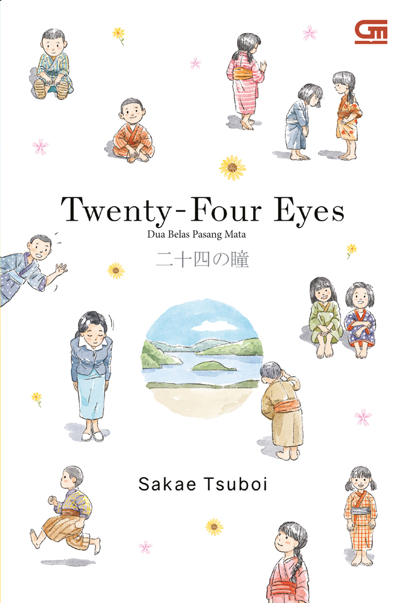

| Home | Best Seller |
 |
Judul : Perpustakaan Tengah Malam (The Midnight Library) Penulis : Matt Haig Tahun Terbit : 9 Juni 2021 Jumlah Halaman : 368 halaman Penerbit : Gramedia Pustaka Utama Harga : Rp105.000 |
|  | Judul : Dua Belas Pasang Mata (Twenty Four Eyes) Penulis : Sakae Tsuboi Tahun : 4 Mei 2021 Jumlah Halaman : 248 halaman Penerbit : Gramedia Pustaka Utama Harga : Rp70.000 |
| <= Fantasy | Fiction => |